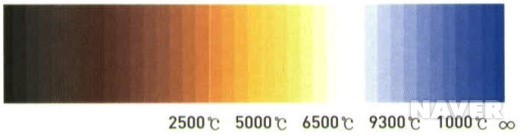

Ref : http://terms.naver.com/entry.nhn?cid=1389&docId=270075&mobile&categoryId=1389
완전 방사체(흑체)의 분광 복사율 곡선으로 흑체의 온도. 절대 온도인 273℃와 그 흑체의 섭씨 온도를 합친 색광의 절대 온도이다. 표시 단위로 K(Kelvin)를 사용한다.
완전 방사체인 흑체는 열을 가하면 금속과 같이 달궈지면서 붉은색을 띠다가 점차 밝은 흰색을 띠게 된다. 흑체는 속이 빈 뜨거운 공과 같으며 분광 에너지 분포가 물질의 구성이 아닌 온도에 의존하는 특징이 있다. 색온도는 온도가 높아지면 푸른색, 낮아지면 붉은색을 띤다.
(1) 해지기 직전: 2200K(촛불의 광색)
(2) 해뜨고 40분 후: 3000K(연색 개선형 온백색 형광등, 고압 나트륨 램프)
(3) 해뜨고 2시간 후: 4000K(백색 형광등, 온백색 형광등, 할로겐 램프)
(4) 정오의 태양: 5800K(냉백색 형광등)
(5) 흐린 날의 하늘: 7000K(주광색 형광등, 수은 램프)
완전 방사체인 흑체는 열을 가하면 금속과 같이 달궈지면서 붉은색을 띠다가 점차 밝은 흰색을 띠게 된다. 흑체는 속이 빈 뜨거운 공과 같으며 분광 에너지 분포가 물질의 구성이 아닌 온도에 의존하는 특징이 있다. 색온도는 온도가 높아지면 푸른색, 낮아지면 붉은색을 띤다.
(1) 해지기 직전: 2200K(촛불의 광색)
(2) 해뜨고 40분 후: 3000K(연색 개선형 온백색 형광등, 고압 나트륨 램프)
(3) 해뜨고 2시간 후: 4000K(백색 형광등, 온백색 형광등, 할로겐 램프)
(4) 정오의 태양: 5800K(냉백색 형광등)
(5) 흐린 날의 하늘: 7000K(주광색 형광등, 수은 램프)
